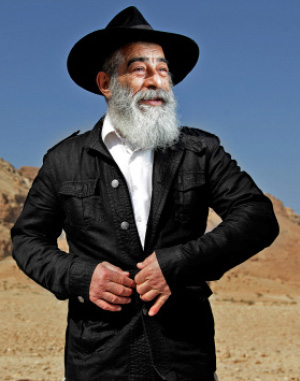

Israeli Music Icon Yearns for Moshiach
Ariel Zilber was one of Israel’s most revered singers and song writers for decades until he became a Lubavitcher Chassid and made his religious and shleimus ha’aretz views public. Since then, he has been ostracized. He almost received a lifetime achievement award from ACUM (the Israeli version of the American Society of Composers, Authors and Publishers) but was ultimately denied due to his political beliefs. * In a talk with Beis Moshiach, R’ Zilber discussed the changes in his life, about the courage to go against the stream, about the long journey to get acquainted with the inner world of Chabad and about his passionate connection to the Rebbe MH”M.

A man who was one of the cultural trend-setters in Israeli music became a Chabad Chassid in the past decade, one who immerses in a mikva each morning and completes the daily Chitas and Rambam along with other shiurim in the Rebbe’s maamarim and sichos.
In every interview with him in the general media, R’ Zilber inserts messages of Chassidus. He wears a big Yechi yarmulke, proclaims Yechi and asks his audiences to anticipate Moshiach. “Moshiach is already present and active in the world,” he says. “As the Rebbe says, we must open our eyes and see him.” However, when I express approval for the great z’chus he has in this shlichus, he plays it down with his characteristic Sabra bluntness. “I still do not feel like a shliach. I do what needs to be done and what the Rebbe expects me to do.”
R’ Zilber is considered one of the most fascinating and colorful artists in Israeli culture. His resume includes playing a role in many popular bands, as well as musical creativity in many styles – rock, pop, Arabic music, folk, hip-hop and even Ethiopian music. He has produced quite a few hits that have become an integral part of the Israeli musical ethos.
His t’shuva journey began a year before the expulsion of the Jews of Gush Katif and northern Shomron. Throughout the years, he was beloved by the mainstream of the Israeli musical culture. All this changed when he decided to stop being pacifistic, and began expressing himself more and more on topics related to Eretz Yisroel and the Jewish People.
“I moved to Gush Katif and was sure that tens of thousands would do the same. Hashem gave us a gift and instead of thanking Him for it and protecting it, we rejected it,” he said sadly.
During the expulsion, he traveled in his car among the yishuvim, encouraging the settlers and demonstrators who came to support them. His active involvement in the battle created waves. He spoke openly against giving away parts of Eretz Yisroel and at the same time, he began his kiruv to the path of Torah. He soon began appearing wearing a kippa while continuing to search for his niche. He found it in Chabad. At first, the only symbol was a Yechi yarmulke, but whoever thought this was a passing fad was mistaken.
CHASSIDUS IS INCREDIBLE
Faithful to the Chabad approach, he did not abandon his musical talent. He continues to create and perform, but the messages and lyrics are about emuna and Chassidus.
“I relate very much to Tanya and the Rebbe’s sichos. Sometimes I read and learn things that make me cry. Chassidus is incredible. You see how the Rebbe manages to combine opposites, how he takes a big dispute among Tanaim or Amoraim and shows how there is no dispute at all. It is incredible and only a Nasi Yisroel can do this. I try to take this wonder and put it into my songs and share it when I am interviewed and when I perform.”
It has been a number of years now that Ariel Zilber moved from the Galil with his wife to live near their daughter on Moshav Gitit. The name of the moshav was coined by Rechavam Zevi, may Hashem avenge his blood, who named the moshav for the winding road that descends to the fields of the yishuv, which is reminiscent of the ancient instrument mentioned in T’hillim: Gitit. He says that on the yishuv there is a marvelous atmosphere and special people which provides him with the right mood for his musical creations.
The yishuv is surrounded by vineyards and date orchards as well as many hothouses. The residents are religious-Zionists along with not-yet religious Jews. Ariel is the sole Lubavitcher.
“We recently started a Tanya shiur in the shul. For now, just I and another person attend it. I hope that more people will join,” he says with a smile.
Despite his close association with Chabad, Zilber is a riddle to many of Anash. We met him in his home and heard about his childhood on a kibbutz and about his life as one of the leading musicians in Israel, and about his mother who always felt connected to Tanach. We also heard about his uncompromising war against giving away parts of Eretz Yisroel and of course, we wanted to know how he came to Chabad.
THE FIRST TIME I REALIZED THE DEPTH IN JUDAISM
Ariel was born on 22 Elul 5703/1943 in Tel Aviv. His parents were pioneers in the newly evolving Hebrew musical culture. His mother was the singer Bracha Zefira and his father Ben Ami Zilber who played the violin in the Israeli Philharmonic Orchestra.
Ariel spent little time with his parents when he was young.
“My parents were busy from morning until night with their musical careers. Back then, my mother went from one DP camp to another in Europe and performed for Jews as she tried to lift their spirits and promote aliya. My father performed in concerts throughout the US and Europe, so they did not have much time to raise me. They put me in the Hadasim dormitory in Kibbutz Gan Shmuel which is in the Chadera area.”
Until age fifteen, Ariel lived in the dorm and was given a communist education but with a lot of love for Eretz Yisroel. Yet this was an anti-Jewish education.
“The teachers spoke constantly against Tanach and against religious Jews. I remember one teacher explaining that the big deal about the splitting of the sea was nothing but an exaggeration. Yom Kippur on the kibbutz was a regular day with three meals served and farm work. On Pesach, there were boxes of matzos on the table along with fresh rolls. Even those who ate the matza did so only because of the symbolism and then immediately went back to eating chametz.”
His mother was a counterforce to this poisonous education.
“My mother revered Tanach. She read from it every day and in her conversations she would mention figures from Tanach. She often quoted from it and drew practical lessons from the content. When she came to visit me, I would tell her how they disdained tradition and she would tell me, ‘Don’t listen to them. Be influenced by the pioneer spirit but not by this.’ My mother would often mention the prophecies of Geula and I remember that she often quoted from the prophets Yirmiyahu and Yeshayahu. Her songs were constructed on texts from Tanach and she constantly looked forward to the Geula with great excitement. It was clear to her that we were about to see the fulfillment of the prophecies. It may just be that my powerful connection to the topic of Moshiach today began back then, thanks to her.”
At a certain point, the demanding framework of the kibbutz did not suit the young boy and after many acts of mischief—including the detonation of some unexploded ordinance in his room which caused the amputation of the sole of his foot—the administration expelled him. He went back to his parents’ house in Tel Aviv and decided he also wanted to enter the field of music. The one who shaped his musical path when he first started out was the musical artist, Louis Armstrong.
“At age fifteen I felt most drawn to the trumpet and worked to get one. I did not know I would be a musician. I did not consider it as a profession, but Louis had such an influence on me with his playing. My father would take me to his rehearsals when I was one and two and put me under his chair. It seems I absorbed it all.”
When he turned eighteen, he felt that his future was in music and he decided to start studying it seriously.
“Until then, I wrote all sorts of tunes that I played on the trumpet but I did not know how to write notes. I wrote down where each finger pressed and tried to remember the tunes, but after a while I did not understand my improvised musical notations. That is when I realized I had to learn notes. I studied music with Rafi Ben Moshe who was the artistic director of all the military bands. The rest is history.”
At some point, Ariel decided that Eretz Yisroel was too small for his ambitions. He went to England where he began writing music and recording songs. When he felt he had gotten what he could out of the experience, he moved to France and began writing in French for singers and well known bands.
“In France I realized for the first time that there is depth and meaning to being a Jew. This was in 5727. Many more years would pass until I did t’shuva but if I think back over the years about when it all began, it was in France that I took the first step.
“I felt that the gentiles hate us. On one of their holidays, I was a guest of gentiles in a pastoral village on one of the beautiful beaches of France. In the middle of the family meal, the father asked me, ‘Where do you come from?’ I proudly told him that I am Jewish and come from Eretz Yisroel. ‘You’re from Israel?’ he shrieked. ‘Get out of here! I don’t want you here!’
“I left and was sure that he was an isolated nut but as time passed, more pieces of the anti-Semitic puzzle began coming together. I saw the hatred even within those who tried to show that they were cultured and loved all of humanity. Maybe all people, but not Jews.
“There were other anti-Semitic incidents that shook me up. There is really something about us that angers them. These stories did not just occur in our history; they happen daily even in the modern era in which we live.”
He lived in France for two years until he got fed up with it. The memory of the moment of realization is still fresh in his mind. Even then, Ariel Zilber tended to speak out against those things he disapproved of, unlike his friends.
“They made a record of my songs. I had begun to be a star and have a career. I remember going to the studio, putting on headphones, and having a big orchestra. I began singing in French and then the thought occurred to me: So what? Now you will sing like this all your life? This is what you are lacking, this French? Are these your songs?
“I told myself no, this is not for me. I took off the headphones and said to the producer, ‘Sorry, but this is not for me. I’m going home, thanks and goodbye.’ They were all shocked. The next day I was on a flight back home. I was thirty-something and I realized there was nothing for me in foreign lands.”
When he returned to Eretz Yisroel, he stored away his many thoughts about Jewish identity and began working intensively in the field of music. He produced some recordings that became bestsellers. There are hits among his songs that according to the experts have become basic staples of Israeli music. Over the years, he was one of the mainstream Israeli singers and the object of much adulation. Each performance of his filled concert halls.
“We are Jews and I always knew that I am a Jew. But I had no connection with religious people. I knew nothing about it and I did not seek to change to a way of life that was in consonance with what I felt deep down. I did not think about doing t’shuva. I remember how one day I was walking around Nachalat Binyamin in Tel Aviv and someone in a kippa and hat came over to me and said, ‘Come, we need a minyan.’ I said to him, ‘Are you crazy? What’s a minyan? Leave me alone.’ I ran away.
“When I did t’shuva and I would walk around where I lived in the Galil, people began to be afraid of me. People were used to seeing me look a certain way and suddenly, I had a beard. Suddenly, I was someone else to them. It felt threatening. I understood them because without a taste of Torah, it is frightening. Furthermore, every Jew has a G-dly soul and he immediately has thoughts of, ‘Maybe this is the right way,’ and the battle with the yetzer ha’ra begins.”
IF I AM A JEW, I NEED TO GO ALL THE WAY
Love and connection to Eretz Yisroel always burned within him. Today, this love is bolstered by the sichos of the Rebbe and the path of Chabad Chassidus, but back then it was love only for the raw earth of Eretz Yisroel.
“When I returned to Eretz Yisroel after living in France, there was a lot of talk about the people of Gush Emunim who wanted to renew the Jewish presence throughout Yehuda and Shomron. Some people approved of this and some were vehemently opposed. Many people from the old yishuv, from the kibbutzim and moshavim, considered them pioneers, myself included. I thought of them as successors to Ben Gurion and Golda Meir, who loved Eretz Yisroel and built in every corner. I didn’t think that they needed my support; I thought as they did but did not do anything about it.”
What caused him to stop sitting on the fence and to become an active participant in the fight for Eretz Yisroel? It was Ariel Sharon’s plan to expel the Jews of Gush Katif and northern Shomron and give away the land to our worst enemies.
“I gave interviews to the media and said it was forbidden for this to happen,” he recalls. Ariel Zilber was and still is one of the famous singers in the country and his statements created a stir. Some joined him and some chose to ostracize him and his songs. Zilber wasn’t fazed. He moved to Alei Sinai in Gush Katif and devoted himself to the fight. He visited the yishuvim and performed and raised their morale.
“I was sure that hundreds and thousands more would join us to bodily prevent the expulsion from happening, but people were apathetic. I still don’t understand it.”
At a certain point, Ariel began pondering the idea that nationalism without Torah cannot endure.
“I was raised in HaShomer HaTzair where they proclaimed, ‘Eretz Yisroel is ours!’ What the knitted kippot and G-d fearing Jews say now, is what HaShomer HaTzair said back then. They say there are three possible motives that drive a person to doing t’shuva: love for Eretz Yisroel, gaining an appreciation for Torah, and the search for truth. I was coming from a place of love for the land, but seeing how Sharon uprooted us, I understood that love for the land without Torah cannot be sustained. This changed my way of thinking. I was also connected to Tanach but I felt that reading texts and relating to them is not enough. You need to live them and live according to what they say.
“Sharon’s expulsion of Gush Katif made me realize, more than ever, that I care about what happens in Eretz Yisroel; I care about the people. I cannot sit in a bubble in Tel Aviv and think just about myself and my immediate surroundings and bask in the love from the mainstream. I also came to the conclusion that this nation cannot endure if it is disconnected from Torah and mitzvos. I wondered: Why am I taking part in the war for Eretz Yisroel? Because I am a Jew! But if I am not observant of Torah and mitzvos, how is my Judaism expressed? If I am a Jew, I need to be a Jew all the way.
“I did not give up anything in the secular world and I don’t miss anything; otherwise, I would not have left it.”
On his yishuv there is one minyan which takes place at dawn and Ariel says this is his main difficulty, i.e. getting up on time for the minyan. The best thing in doing t’shuva, he says, is the very process of doing t’shuva. “You know this is only the beginning and there is no end.
“The moment I decided this is the direction, everything flowed. I decided that I am a Jew and a Jew is supposed to do mitzvos and learn Torah, and so I went to shul for the first time in my life, of my free choice. I asked about how to daven, I took an interest in mitzvos; I wanted to be part of this.”
I remind Ariel that he talks about the process of doing t’shuva lightly but he went through difficult times. His songs were banned in all the media, and even the production companies did not want to work with him. This forced him to work on his own, not an easy thing for someone who is used to having a bevy of assistants. But he dismisses it.
“I don’t place any value on my career. It has no independent value. It is merely a part of my life. There are people who were angry at me, people who cannot stand me till this day because I suddenly changed on them, but what can I do? In the end, they too will understand that they are living a mistake.”
Zilber is tough. Moreover, his determinedness justified itself, as in recent years his songs are played again and people have come back to his performances. But until that time, he and his family went through difficult times.
“I will tell you the truth. It did not bother me on an emotional level, but on a practical level it did. The previous CD was not in the stores because there simply was no distributor willing to distribute it. But the public loved me and my songs have had staying power over the years. People do not give up on music because of a temporary political boycott. Music is stronger than everything.”
No. He does not regret his protest songs. Zilber explains that he is a Chassid of the Rebbe and from the Rebbe he learned that when it hurts, you cry out.
“I don’t belong to any party. I am concerned for the next generation. That is art, when a person says what he thinks through his art. Otherwise, what is he worth? I was given a talent and I cannot fool myself and write that the world is beautiful when terrible things are going on here. I cannot remain indifferent and I am not allowed to remain indifferent. We are talking about the lives of millions of Jews who live here, who are in danger.”
WRITING TO THE REBBE – ONLY WITH A GOOD HACHLATA
Those who have been watching Ariel Zilber in recent years are amazed by the extent of his work in spreading the wellsprings and publicizing the identity of Moshiach. In every interview he mentions the Rebbe and talks about Moshiach without beating around the bush and with a lot of pride.
How did it all begin?
It began back with the fight for Gush Katif but intensified in the years that followed. It is no longer just a yarmulke that says Yechi on it. It’s the full life of a Chassid, externally and internally, with all the practices and customs.
“I still remember the blessed work of Chabad from the Six Day War. During the war, I saw how the Chabad Chassidim spread across the land to put t’fillin on with people. Back then I already said to myself: How wonderful this is. Since then, I’ve always had a warm place in my heart for Chabad, but the feeling didn’t go anywhere. Many Jews love Chabad but don’t necessarily become like them.
“My first encounter with a Chabad Chassid was with the musician, Avi Piamenta. Through him, I began getting to know Chabad on a deeper level and through him I began putting on t’fillin, which I put on till this day.”
When he began getting involved with Chabad, Zilber lived on a yishuv near Shlomi in the north and he davened in the Chabad shul in the city. He met the local Chabad community and was impressed by them.
“The one who dragged me there was my driver, a Lubavitcher by the name of Ilan Zecharia who lives in Shlomi near me. When we traveled together to performances throughout the country, I heard about the Rebbe from him and also heard about writing through the Igros Kodesh. We spent the traveling time talking about these things. Through him, I also met R’ Benny Nachum of Shlomi and became aware of the array of shiurim available at the Chabad house. I would also go with him to the shiurim of R’ Shmuel Frumer in Kiryat Shmuel. The Rebbe’s approach fascinated me, to say the truth without batting an eye but with tremendous Ahavas Yisroel.”
It seems as if his journey to discovering Chassidus was accompanied by tens of thousands of watchful eyes. Ariel is someone who is scrutinized by the media on an almost daily basis. In an interview that he gave the newspaper Tel Aviv in the first year of his becoming religious, he said, “My Rebbe is the Lubavitcher Rebbe. I ask him questions through the Igros Kodesh and follow the answer. If there is some guidance there, I carry it out; otherwise, there is no bracha. In general, I love the Chabadnikim. They seem to me to be real Ohavei Yisroel.”
In response to the journalist asking him whether he would one day adopt their manner of dress, he said, “I don’t rule it out. I only know that since I began to get involved, my life has been on the ascendancy.” He told about writing through the Igros Kodesh, “I heard about it and immediately began writing to the Rebbe. Today I want to hear what the Rebbe has to say about everything. I want to consult with him and receive his bracha. I don’t make a move without asking the Rebbe.
“Some time ago, I produced a CD and wrote to the Rebbe and asked for a bracha for it. The Rebbe’s answer was that I should make a bar mitzva. I took it literally and got an aliya to the Torah on Shabbos in the Chabad shul in Shlomi and read the entire Haftora. Boruch Hashem, the CD is successful. I slowly began to realize that the Rebbe also makes demands, and each time I write to the Rebbe I have to make a good hachlata and give of myself. Since then, I always make a commitment to something new along with writing to the Rebbe.”
When I bring up all the interviews that he gave over the years, he smiled. I guess I was reminding him of things he had forgotten. Today, Ariel is a Chabad Chassid in every respect. When you listen to him, it’s amazing how his terminology is Chassidic as though he was raised this way.
MY ENTIRE LIFE IS THE REBBE
This past year, Ariel Zilber produced a new CD called HaAtalef v’HaTarnigol (The Bat and the Rooster). We asked him to what extent Chassidus and the Rebbe’s teachings influenced the texts and tunes on this new CD.
“Of course it penetrated, deliberately or not. For example, the title song of the CD about the rooster and the bat is taken from the Gemara in Sanhedrin that gives an analogy about anticipation of the Geula by way of a conversation between the rooster who crows excitedly as the new day dawns and the bat who lives in darkness.
“The CD also has a song about the neshama that prefers to stay up above but Hashem sends it down here to a body in this physical world. This last CD is full of songs about emuna but it also has songs that I wrote back then, before I became religious. When I looked at the words afterward, I saw that they were full of deep messages and I added them to this CD.”
To what extent is the Rebbe present in your life and with you in your creative work?
“My entire life is the Rebbe. When I learn the Rebbe’s sichos, I see how he bridges differences and turns them all into one seamless whole; it’s incredible. Sometimes, when I finish learning a sicha of the Rebbe, I cry. I just finished learning a sicha in which the Rebbe explains the dispute between Acheirim (lit. others) and Rabbi Meir regarding quality and quantity. The Rebbe shows how there is no disagreement and does so in purely logical fashion. All the fine points about ‘sinai’ and ‘oker harim’ are incredible.”
Do you consider music as a shlichus? In every interview we see how you mention the Rebbe and various points in Chassidus …
“I don’t know if I’m a shliach. I still do not consider myself someone knowledgeable enough to be a shliach, but I live what I believe and this comes forth from me. When people ask me about my getting involved with Chabad and ask why Chabad, I tell them that I had no choice in the matter. I did not pick Chabad; Chabad chose me. It is known that the Rebbe Rashab chose the souls that would learn in Tomchei T’mimim and the Rebbeim pick who will be their Chassidim, so in truth, I wasn’t asked my opinion. As to your question, I speak with people about Chassidus as much as I can. People say to me, if only we had the courage to do like you and go with it all the way.”
What attracted you to Lubavitch – the intellectual aspect or the experiential-soul aspect?
“In Mishlei it says, ‘do not rely on your understanding,’ and in Avos it says, ‘do not believe in yourself until the day you die.’ When I became interested in Judaism, I did not seek to understand everything. I knew that in Chassidus and the Rebbe’s teachings there is tremendous wisdom and I would not necessarily understand it all. Even today, ten years later, I know that I do not understand everything. For a long time now, I have a shiur for myself in Lessons in Tanya which is an incredible book that explains Tanya. But even when I read it, I don’t always understand every point, but as it says there, one who learns G-d’s Torah is one who hugs the King and I really feel that Hashem is with me at every step I take.”
LIVING MOSHIACH AND SEEING DIVINE PROVIDENCE AT WORK
Your appearance screams Moshiach. You wear a Moshiach pin in your lapel and a Yechi yarmulke and you talk about Moshiach in nearly every interview. The question is how to publicize Moshiach’s identity all the way without being nervous and uncomfortable.
“In order to publicize Moshiach, you need to live it. To believe that every word the Rebbe said must come to pass. That Moshiach was already revealed, as the Rebbe explains in his sichos, and the problem is with us. We need to open our eyes and discover him. In order to reach this level, we need to use the advice and practices that we saw and heard from the Rebbe. To give a lot of tz’daka which hastens the Geula and to act with Ahavas Yisroel and put aside our egos, to put aside our egos and be battul to the Rebbe and to the truth that we do not always see and feel because we are busy with ourselves. When all this happens, we won’t be nervous about publicizing what the Rebbe wants us to publicize.
“In general, those who open their eyes see amazing things. From the day I learned the sicha about opening our eyes, I have not stopped seeing incredible hashgacha pratis. I’m not talking about big things. I am talking about things in daily life, and that makes it all the more powerful. I sit down to write a composition for a song and nothing comes to me. I sit there and ask Hashem and suddenly it all begins to flow.
“Another example, yesterday I went to shul and when I got there, I realized I had forgotten my Chabad Siddur. I was unhappy about this since I knew that there were no Nusach Arizal Siddurim in shul. I asked the Rebbe for a bracha and when I went over to the bookcase I suddenly saw a Chabad Siddur. I was flabbergasted because I have been davening there for years and never saw this Siddur. So too, the Geula is already here and we just need to open our eyes to see it.”
Nosson Avrohom. "Israeli Music Icon Yearns for Moshiach." Beis Moshiach, no. 920 (March 19, 2014).